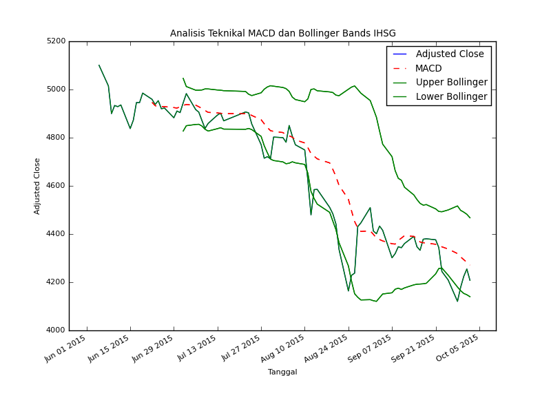

twitter, ihsg and technical analysis - labs127.io and me

Skrip ini pertama kali saya buat tahun 2013 yang lalu, dan baru saja diperbarui, menyesuaikan dengan beberapa dependencies yang sudah berganti versi. Gambaran skrip ini sebagai berikut:
- ambil data dari yahoo finance
- oleh data dengan pandas
- gambar plot dengan matplotlib
- update twitter dengan twython
# app.py from twython import Twython import pandasaham as pshm import time import datetime now_time = datetime.datetime.fromtimestamp( time.mktime(time.gmtime( (datetime.datetime.utcnow() - datetime.datetime(1970, 1, 1)) \ .total_seconds() + 25200))).strftime('%Y-%m-%d %H:%M:%S') # url # https://twython.readthedocs.org/en/latest/usage/advanced_usage.html cons_key = '' cons_secret = '' acc_token = '' acc_token_sec = '' t = Twython(app_key=cons_key, app_secret=cons_secret, oauth_token=acc_token, oauth_token_secret=acc_token_sec) # download and analyze it pshm.dl() # update twitter _with_media photo = open('ihsg.png', 'rb') t.upload_media(status='[Autotwit] Grafik Pergerakan IHSG 3 bulan terakhir ' \ 'dgn Analisis MACD ' \+ now_time + ' #saham #ihsg #jci #idx', media=photo) photo.close()
# pandasaham.py import pandas as pd import matplotlib import matplotlib.pyplot as plt import numpy as np from datetime import datetime, timedelta import re import time import urllib2 # download data def dl(): url = 'http://finance.yahoo.com/q/hp?s=%5EJKSE+Historical+Prices' html = urllib2.urlopen(url).read() pattern = re.compile(r"http://real-chart.*=\.csv\"") m = re.search(pattern, html).group() with open('table.csv', 'wb') as f: f.write(urllib2.urlopen(m).read()) df = pd.read_csv('table.csv', index_col='Date', parse_dates=True) df = df.sort_index(ascending=True) df = df.tail(80) # analysis macd = pd.rolling_mean(df['Adj Close'], 12) # bollinger bands # https://github.com/arvindevo/MachineLearningForTrading/blob/master/bollingerbands.py movavg = pd.rolling_mean(df['Adj Close'], 20, min_periods=20) movstddev = pd.rolling_std(df['Adj Close'], 20, min_periods=20) upperband = movavg + 2*movstddev lowerband = movavg - 2*movstddev # plot settings matplotlib.rcParams.update({'font.size': 8}) s = datetime.now() # begin plot df['Adj Close'].plot(label='Close') macd.plot(label='macd', linestyle='--', color='r') upperband.plot(color='green') lowerband.plot(color='green') plt.title('Analisis Teknikal MACD dan Bollinger Bands IHSG') plt.legend(['Adjusted Close', 'MACD', 'Upper Bollinger', 'Lower Bollinger']) plt.xlim(s - timedelta(days=130), s + timedelta(days=7)) plt.ylabel('Adjusted Close') plt.xlabel('Tanggal') # save the image for twitter update with image plt.savefig('ihsg.png') # show graph # plt.show() dl()
Sumber: twitsaham di github